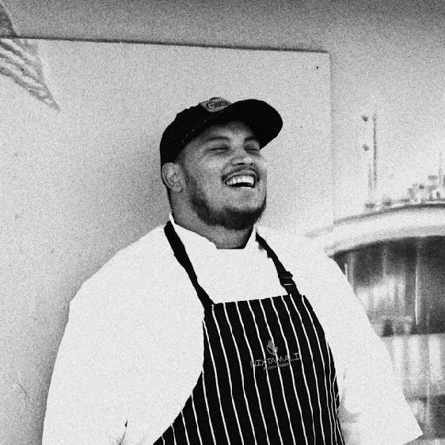

Pete Quinones IV · San Antonio, TX
Kaizen Fuel Kitchen + The Kaizen Tribe
131+ athletes and go-getters read Letters from The Kaizen Tribe
a weekly field note documenting the journey from line cook to disciplined founder — building kaizen fuel kitchen + fueling athletes